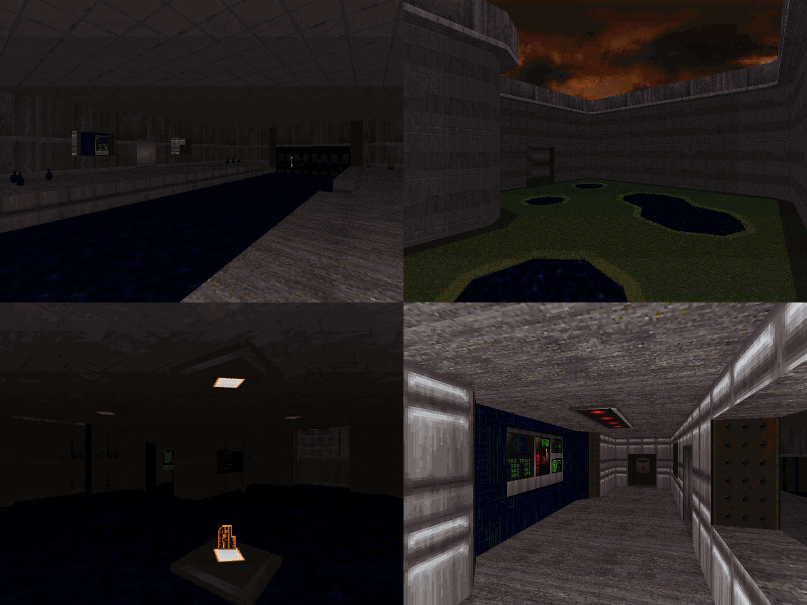

DOWNLOAD LINKS


| Year | 2025 |
| IWAD | Doom II |
| Source port | Boom-compatible |
| Game mode(s) | Single-player |
| Map(s) contributed | MAP04 |
| Other contributions | MAP04 music |
The Halls Speak to Me is a 23-map megawad that came to life as a community project hosted by DiR. The
gimmick in this one was to make maps referencing or inspired by Doom II MAP02, Underhalls. And uhh... 'nuff said,
really.
My contribution to the project, "an underhall i guess" (intended to be stylized in all lowercase), occupies the MAP04
slot. The map opens up with a view that references Underhalls as closely as possible, but as you progress further into
its concrete-walled depths, the map becomes more than that. The layout is somewhat inspired by Underhalls in how it
loops around itself, but I took some liberties in other areas - perhaps most notably the outdoor section to the east.
Gameplay in the map is relatively chill, and it's accompanied by a jazzy remix of "The Healer Stalks" that I composed
myself.